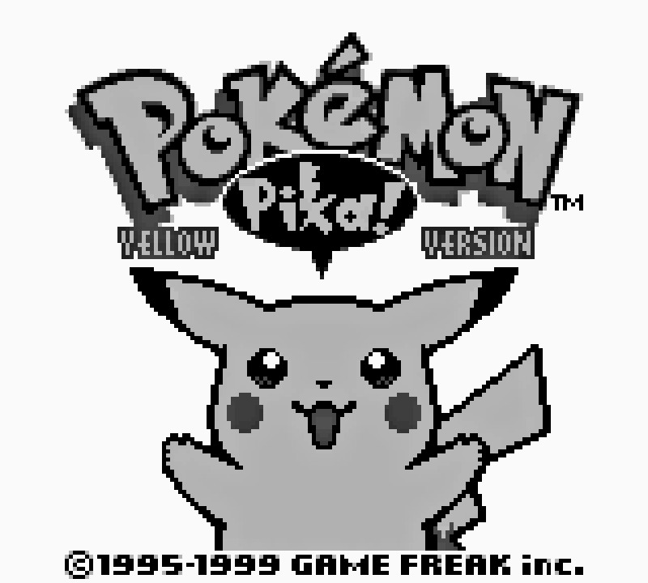
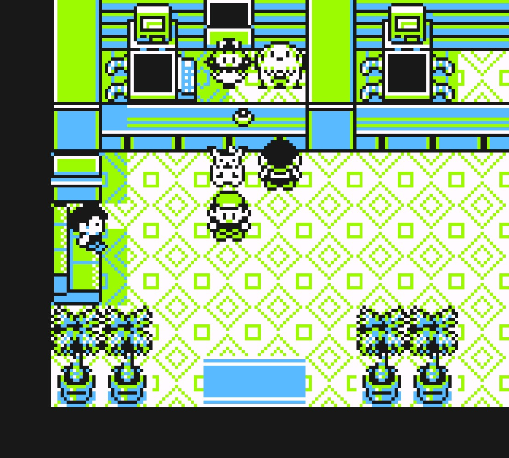
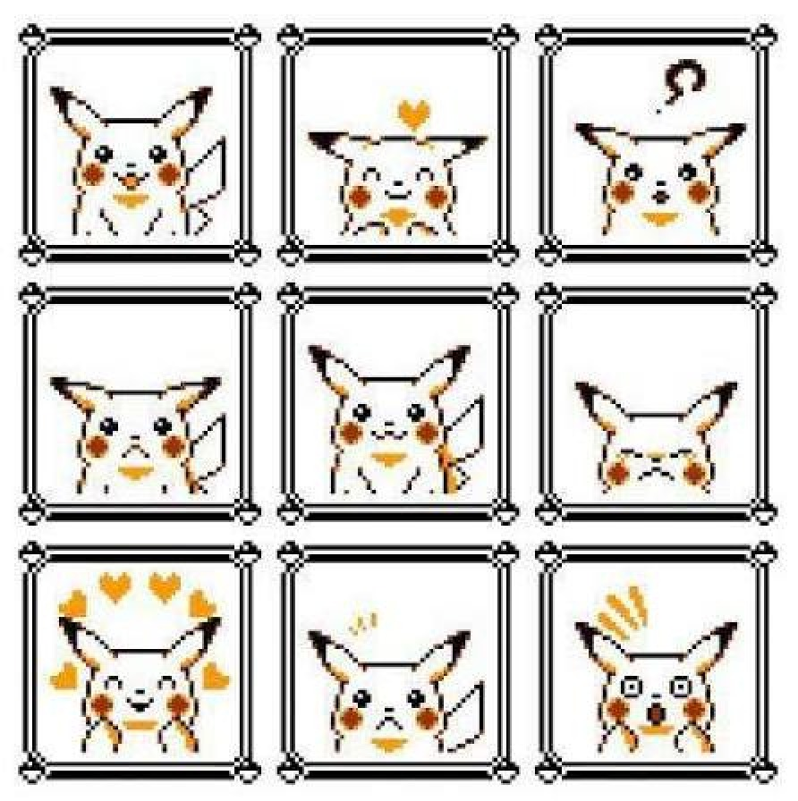
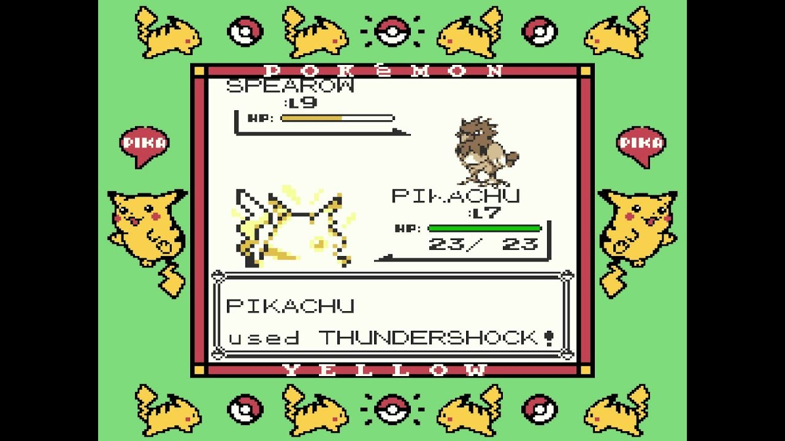
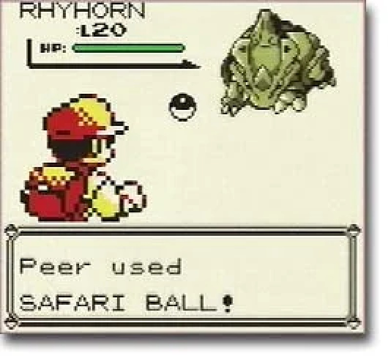
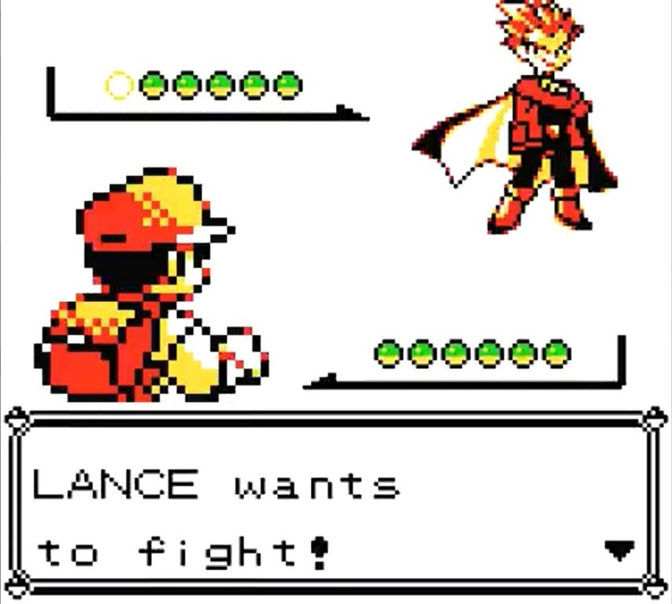

Hồi lớp 6, cả xóm tớ sống trong hai thế giới song song.
Thế giới thứ nhất là buổi chiều trên tivi, nơi Satoshi và con Pikachu của nó đi hết vùng này đến vùng khác. Thế giới thứ hai là mấy xấp hình Pokémon tụi tớ sưu tầm, đổi chác, cãi nhau xem con nào mạnh nhất. Chỉ thiếu đúng một thứ: được tự tay cầm một con Pokémon đi bắt những con khác.
Rồi ông anh hàng xóm — vẫn là ổng, người mà cậu đã gặp trong gần như mọi bài của tớ — lấp nốt khoảng trống đó. Một hôm ảnh đưa tớ mấy cái đĩa mềm, trong đó chép một trò chơi tên là Pokémon Yellow, kèm luôn một phần mềm mà mãi sau này tớ mới biết gọi là "giả lập". Máy Game Boy thời đó quý lắm, cả xóm làm gì có đứa nào mơ tới. Nhưng hóa ra không cần — chỉ cần cái máy tính và mấy cái đĩa mềm đó, tớ đã có nguyên vùng Kanto trong nhà mình.
Game không màu — màn hình Game Boy nguyên bản chỉ có mấy tông xám xanh — và toàn tiếng Anh, mà tiếng Anh của tớ hồi đó thì đang ở mức bập bẹ đánh vần. Nhưng chẳng sao cả. Có những trò chơi mình không cần đọc hiểu vẫn chơi được, vì mình đã "học" nó từ trước qua màn hình tivi rồi.
Thời đó có cả bản Blue, bản Green, nhưng cả xóm tớ chỉ chơi đúng bản Yellow. Lý do đơn giản lắm: ai cũng thích Pikachu mà, phải không? Và bản Yellow là bản duy nhất mà Pikachu không nằm trong bóng — nó lẽo đẽo đi theo sau lưng nhân vật chính, từng bước một.

Cái hay nằm ở chỗ này, và tớ muốn kể kỹ một chút. Đầu game, quay lại bấm nút nói chuyện với nó, nó quay mặt đi, tỏ vẻ khó chịu ra mặt — kiểu "ông là ai, tôi theo ông vì bị ép thôi". Y hệt con Pikachu ương bướng không chịu vào bóng của Satoshi trong phim. Nhưng cứ đi cùng nhau, đánh cùng nhau, thắng cùng nhau... rồi một ngày nào đó bấm vào, nó quay lại nhảy cẫng lên, tim bay ra. Không có dòng chữ nào thông báo cả — chỉ là một con thú ảo trên màn hình không màu, vậy mà tớ nhận ra được nó đã đổi tính lúc nào không hay. Đúng như tình bạn ngoài đời: chẳng có cột mốc nào rõ ràng, chỉ tới một hôm nhìn lại mới thấy đã thân từ bao giờ.

Cú tát đầu tiên game dành cho tớ là GYM 1. Trên phim, Pikachu của Satoshi giật ai cũng ngã. Trong game, tớ hùng hổ mang Pikachu vào đánh ông trùm hệ đá — và điện giật vào đá không sứt một miếng máu nào. Đứng hình. Hóa ra thế giới này có luật riêng của nó, không chiều theo phim, cũng không chiều theo mình.

Cuối cùng tớ phải đi bắt một con sâu, kiên nhẫn train nó lên thành cái kén, rồi từ cái kén nở ra con bướm Butterfree — và chính con bướm đi lên từ con sâu đó mới là đứa gánh trận GYM đầu đời cho tớ. Bài học "khắc hệ" đó tớ nhớ tới tận bây giờ — nhớ hơn khối bài học trên lớp cùng năm đó.
Mà thời đó làm gì có walkthrough, có Google. Chơi tới đâu mò tới đó. Vũ khí duy nhất của tụi tớ là... nhau. Tối tối cả đám tụ qua nhà nhau, và mấy buổi đó không khác gì họp bàn chiến lược quân sự: đứa này khai lấy được món đồ ở chỗ nọ, đứa kia truyền tin con chim huyền thoại nằm ở hang nào, "mày muốn đi tiếp thì phải làm cái này trước". Mỗi đứa một đội hình riêng, không đứa nào giống đứa nào — trừ một điểm chung duy nhất: con Pikachu luôn có mặt. Bản Yellow mà, bỏ Pikachu thì chơi bản Yellow làm gì.
Rồi cả đám ngồi phân tích chưởng này mạnh, move kia xịn — mà tiêu chí phân tích thì ngây ngô hết sức: cứ damage to là auto xịn. Chẳng đứa nào biết EV là gì, effect chiêu là gì, mấy khái niệm đó ở thì tương lai xa lắm. Bù lại tụi tớ có mấy chiêu "công nghệ" riêng: save trước khi ném bóng, con Pokémon mà chui ra được là load lại, ném tiếp, tới khi nào nó chịu nằm yên trong bóng thì thôi.

Đỉnh cao là ở Safari Zone — khu bắt thú có giới hạn bước đi — phải canh save từng chặng, tính toán bắt con này trước con kia sau như đi chợ có ngân sách.
Đường về nước cuối cùng cũng tới: Tứ đại thiên vương. Trước trận đó là cả một mùa đấu võ mồm — đội hình tao mạnh hơn, con này của mày gặp con kia của tao là xịt chiêu chết ngay. Và tớ đã đi hết con đường đó, đánh bại cả bốn, phá đảo. Với một thằng nhóc lớp 6 chơi game tiếng Anh bằng vốn từ đếm trên đầu ngón tay, đó là một tấm huân chương thật sự.

Pokémon Yellow do Game Freak làm, Nintendo phát hành trên Game Boy năm 1998 ở Nhật, các nơi khác lần lượt 1999–2000. Nó là bản làm lại của Red/Blue nhưng nắn theo phim hoạt hình — đó là lý do người chơi bị "ép" khởi đầu bằng Pikachu, Jessie và James xuất hiện thay cho đám lính Team Rocket thường, và con Pikachu nhất quyết không chịu tiến hóa, y hệt trên phim.
Tiếng kêu của nó cũng không phải tiếng bíp tổng hợp như 150 con còn lại, mà là giọng thật của Ikue Ōtani — người lồng tiếng Pikachu trong phim — được nén xuống cho vừa con Game Boy. Còn cái cơ chế Pikachu đi theo sau lưng và thay đổi tình cảm mà tớ kể ở trên? Nó hay đến mức hơn mười năm sau Nintendo mang trở lại trong HeartGold/SoulSilver, rồi tới 2018 thì remake hẳn nguyên bản Yellow thành Let's Go, Pikachu! trên Switch.
Chi tiết vui cuối, tớ tra được sau này: ngoài nước Nhật, Yellow là game cuối cùng phát hành cho chiếc Game Boy "trùm" nguyên thủy, trước khi cả thế giới chuyển sang Game Boy Color. Bản không màu tớ chơi, hóa ra, là nốt nhạc cuối của cả một kỷ nguyên.
Nghĩ lại, cái tớ nhớ nhất về Pokémon Yellow không phải Tứ đại thiên vương, cũng không phải mấy con huyền thoại. Là mấy buổi tối "họp chiến lược" ở nhà nhau. Là cảm giác cả xóm cùng mò mẫm một thế giới không có bản đồ, mỗi đứa cầm một mảnh thông tin, ráp lại với nhau mới thành đường đi. Bây giờ muốn biết gì thì ba giây Google là xong — tiện hơn nhiều, nhưng cũng vì thế mà chẳng còn lý do gì để tối tối đạp xe qua nhà nhau nữa.
Và tớ vẫn nghĩ về con Pikachu đó. Một nhúm điểm ảnh xám xanh, không thoại, không cốt truyện riêng, vậy mà dạy tớ một điều mà nhiều game bom tấn bây giờ quên mất: muốn người chơi thương một nhân vật, không cần cắt cảnh hoành tráng — chỉ cần cho nó đi theo sau lưng người ta đủ lâu.
Chỗ này phải nói thật thà: bản Yellow gốc hiện không còn đường mua chính thức — nó từng lên 3DS Virtual Console nhưng cửa hàng đó đã đóng từ 2023. Cách chơi lại thực tế nhất bây giờ vẫn y hệt cách tớ đến với nó năm lớp 6: tải giả lập về mà chơi, có đầy trên mạng — âu cũng là một vòng lặp trọn vẹn, chỉ khác là không cần ông anh hàng xóm chép qua đĩa mềm nữa. Còn nếu muốn con đường chính thống, Pokémon: Let's Go, Pikachu! trên Switch chính là bản remake của Yellow — vẫn Kanto đó, vẫn con Pikachu lẽo đẽo sau lưng đó, chỉ là giờ nó có màu, và mình thì đã lớn.